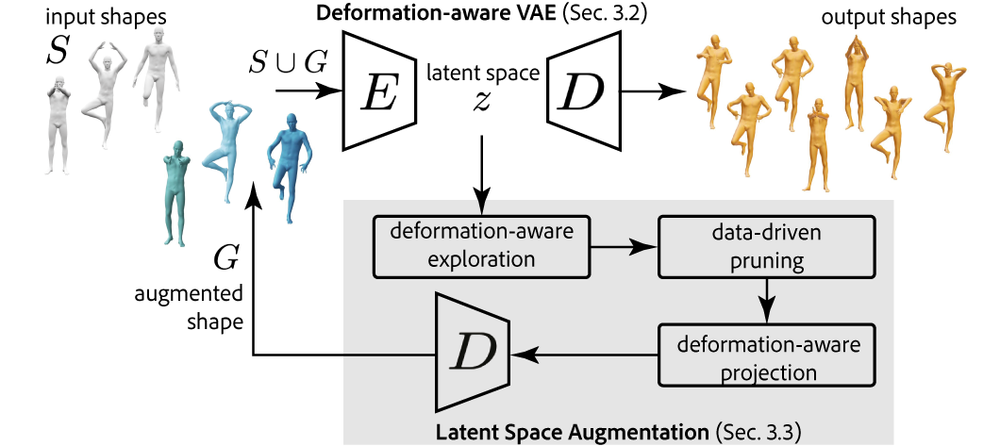
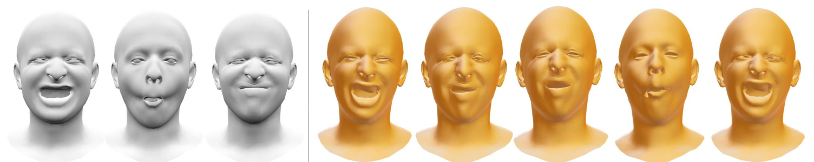
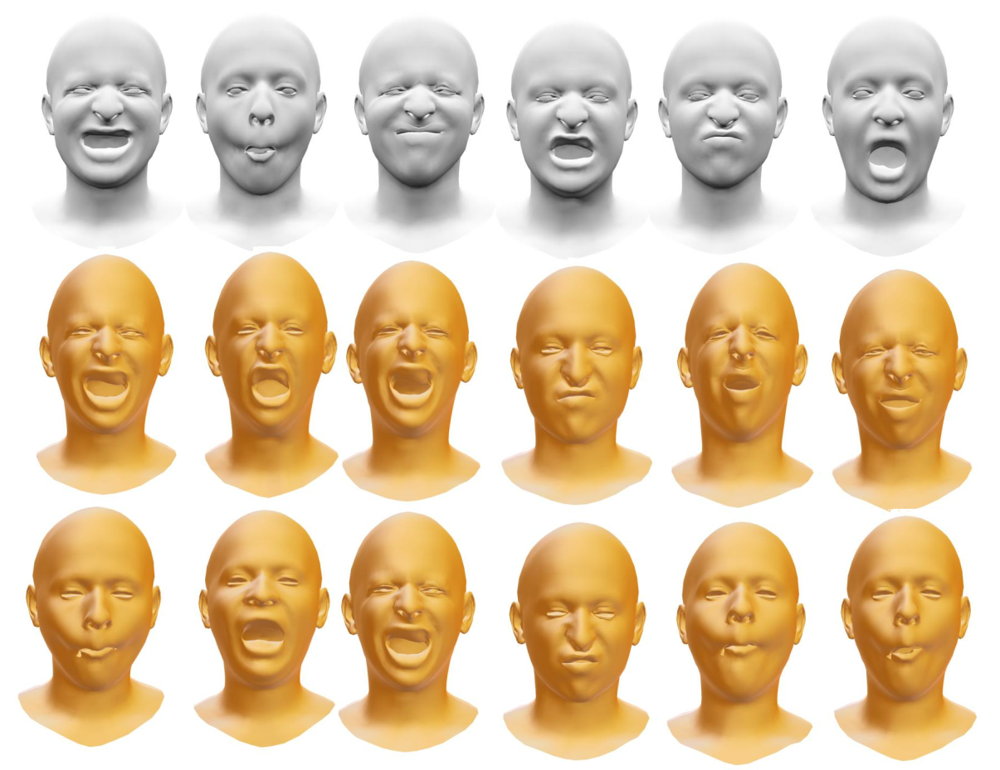
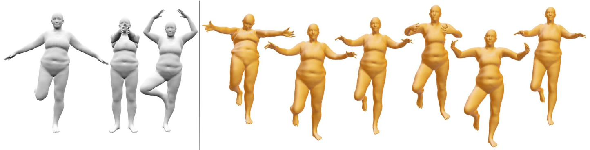
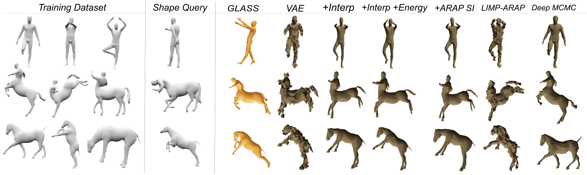
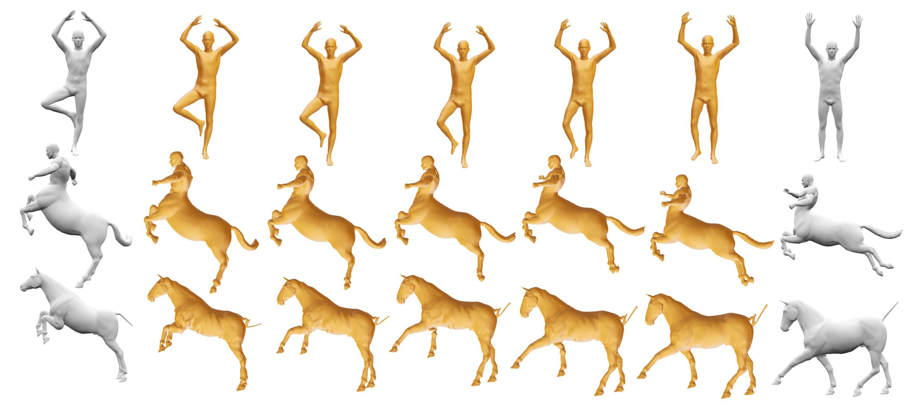
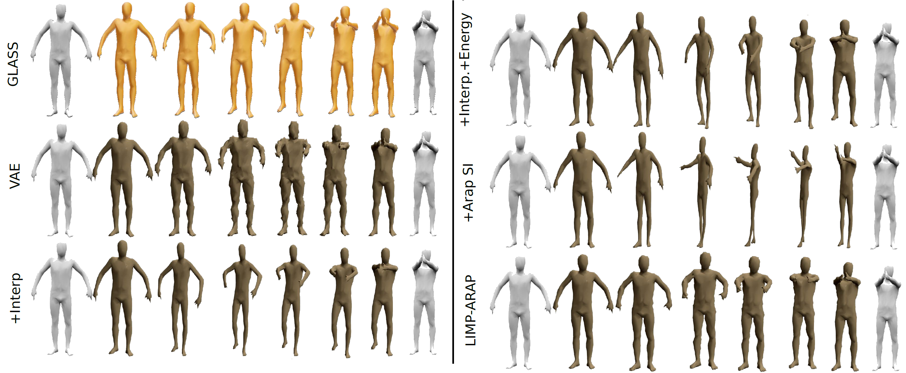
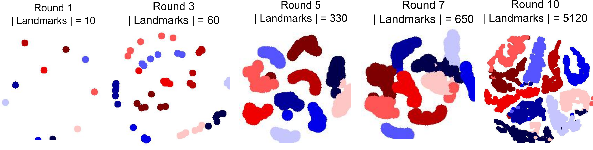

Computer Vision And Pattern Recognition (CVPR), 2022
Starting from just 10 shapes (larger), our method iteratively augments the collection by alternating between training a VAE, and exploring random perturbations in its low-dimensional latent space guided by a purely geometric deformation energy. Here we show the 1000 most diverse shapes from the first 5K discovered by our method, positioned according to their latent embedding (projected to 2D via t-SNE). Shapes are colored according to the initial landmark they trace back to, with shapes added in later iterations lighter (greyer) in color. The augmentation effectively fills in the space between the sparse initial landmarks, and even extrapolates beyond them. It manages to also interpolate global rotations for samples near the back-facing exemplar, and yields shapes with larger feet-strides (far left), and crossed arms or feet (front, left and center) even though there are no such initial landmarks.
Abstract
We investigate the problem of training generative models on very sparse collections of 3D models. Particularly, instead of using difficult-to-obtain large sets of 3D models, we demonstrate that geometrically-motivated energy functions can be used to effectively augment and boost only a sparse collection of example (training) models. Technically, we analyze the Hessian of the as-rigid-as-possible (ARAP) energy to adaptively sample from and project to the underlying (local) shape space, and use the augmented dataset to train a variational autoencoder (VAE). We iterate the process, of building latent spaces of VAE and augmenting the associated dataset, to progressively reveal a richer and more expressive generative space for creating geometrically and semantically valid samples. We extensively evaluate our method against a set of strong baselines, provide ablation studies, and demonstrate application towards establishing shape correspondences. GLASS produces multiple interesting and meaningful shape variations even when starting from as few as 3-10 training shapes.
Video
Method Pipeline

We present GLASS to iteratively build a deformation-aware VAE latent space and analyzing it to generate new training samples to augment the original training set. This enables generation of diverse yet plausible shape variations starting from very few input examples.
Training GLASS on the human, centaur, and horse meshes using the 3 examples each (top). (Bottom) We show random samples from the latent space, which combine different properties learned from the example deformations.

Despite facial expressions not being perfectly locally rigid, we show above that GLASS generates plausible novel expressions on the COMA dataset from just 3 landmarks.

GLASS's facial-expression generation results, when trained on 6 expressions from the COMA dataset.

In the above figure, we show that GLASS can work with any bodyshape, with generated samples (gold) from 3 FAUST poses (grey) of a large-frame identity.

Generation results evaluated by coverage. We train different methods on the same training data (col 1) and generate
comparable numbers of shapes. Given two shapes from the holdout data (col 2), we evaluate the methods by finding the closest generated shape (cols 3-9). Note how the baselines exhibit strong artifacts and usually do not match the query shape

Interpolation results. In gray, we show two landmark shapes. In gold, we show the decoded meshes after we linearly interpolate the latent space between these two landmarks. All models are trained on only 5 landmarks.

We compare the interpolation results between our method, several ablations of our method, and prior work.

tSNE embedding of generated samples shows progressive augmentation of the shape space. Sample color indicates originating (parent) shape.
Citation
@article{DBLP:journals/corr/abs-2108-03225,
author = {Sanjeev Muralikrishnan and
Siddhartha Chaudhuri and
Noam Aigerman and
Vladimir G. Kim and
Matthew Fisher and
Niloy J. Mitra},
title = {{GLASS:} Geometric Latent Augmentation for Shape Spaces},
journal = {CoRR},
volume = {abs/2108.03225},
year = {2021},
url = {https://arxiv.org/abs/2108.03225},
eprinttype = {arXiv},
eprint = {2108.03225},
timestamp = {Wed, 11 Aug 2021 15:24:08 +0200},
biburl = {https://dblp.org/rec/journals/corr/abs-2108-03225.bib},
bibsource = {dblp computer science bibliography, https://dblp.org}
}